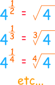

Fractional Exponents
Also called "Radicals" or "Rational Exponents"
Whole Number Exponents
First, let us look at whole number exponents:

The exponent of a number says how many times to use the number in a multiplication.
In this example: 82 = 8 × 8 = 64
Another example: 53 = 5 × 5 × 5 = 125
Fractional Exponents
But what if the exponent is a fraction?
|
An exponent of 12 is a square root An exponent of 13 is a cube root An exponent of 14 is a 4th root And so on! |
 |
Why?
Let's see why in an example.
First, the Laws of Exponents tell us how to handle exponents when we multiply:
Example: x2x3 = (xx)(xxx) = xxxxx = x5
Which shows that x2x3 = x(2+3) = x5
So let us try that with fractional exponents:
Example: What is 9½ × 9½ ?
9½ × 9½ = 9(½+½) = 9(1) = 9
So 9½ times itself gives 9.
Now, what do we call a number that, when multiplied by itself, gives another number? The square root of that other number!
See:
√9 × √9 = 9
And:
9½ × 9½ = 9
So 9½ is the same as √9
Try Another Fraction
Let us try that again, but with an exponent of one-quarter (1/4):
Example:
16¼ × 16¼ × 16¼ × 16¼ = 16(¼+¼+¼+¼) = 16(1) = 16
So 16¼ used 4 times in a multiplication gives 16,
and so 16¼ is a 4th root of 16
General Rule
It worked for ½, it worked with ¼, in fact it works generally:
x1/n = The n-th Root of x
In other words:
x1/n = n√x
Example: What is 271/3 ?
Answer: 271/3 = 3√27 = 3
What About More Complicated Fractions?
What about a fractional exponent like 43/2 ?
That is really saying to do a cube (3) and a square root (1/2), in any order.
Let me explain.
A fraction (like m/n) can be broken into two parts:
- a whole number part (m) , and
- a fraction (1/n) part
So, because m/n = m × (1/n) we can do this:
xm/n = x(m × 1/n) = (xm)1/n = n√xm
The order does not matter, so it also works for m/n = (1/n) × m:
xm/n = x(1/n × m) = (x1/n)m = (n√x )m
And we get this:
Some examples:
Example: What is 43/2 ?
43/2 = 43×(1/2) = √(43) = √(4×4×4) = √(64) = 8
or
43/2 = 4(1/2)×3 = (√4)3 = (2)3 = 8
Either way gets the same result.
Example: What is 274/3 ?
274/3 = 274×(1/3) = 3√274 = 3√531441 = 81
or
274/3 = 27(1/3)×4 = (3√27 )4 = (3)4 = 81
It was certainly easier the 2nd way!
Now ... Play With The Graph!
See how smoothly the curve changes when you play with the fractions in this animation, this shows you that this idea of fractional exponents fits together nicely:
Things to try:
- Start with m=1 and n=1, then slowly increase n so that you can see 1/2, 1/3 and 1/4
- Then try m=2 and slide n up and down to see fractions like 2/3 etc
- Now try to make the exponent −1
- Lastly try increasing m, then reducing n, then reducing m, then increasing n: the curve should go around and around